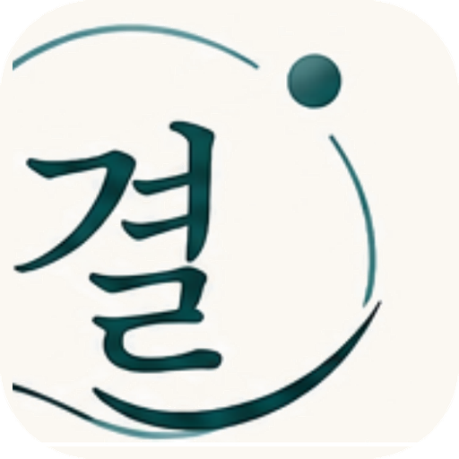

리포트를 불러오는 중이에요…
리포트를 불러올 수 없어요
링크를 다시 확인해주시거나 학원으로 문의해주세요.

이끌림수학학원 · 학습 리포트
-
-
📢 공지사항
✅ 출결·숙제
📅 시험
🔁 보강
등록된 공지사항이 없어요
이번 달 출석
-
일
숙제 완료율
-
%
🗓️ 최근 출결
출결 기록이 아직 없어요
등록된 시험 일정이 없어요
📝 테스트 기록
기록된 테스트가 없어요
보강 대기 중인 항목이 없어요
💡 보강은 이렇게 진행돼요
보강은 단순히 시간을 채우는 방식이 아니라, 결석한 수업 내용과 학생에게 필요한 개념을 먼저 확인한 뒤 가장 적절한 형태로 진행됩니다. 경우에 따라 같은 진도의 다른 반 수업에 함께 참여하거나, 자습실에서 질문 확인 및 개념 보완 중심으로 진행될 수 있습니다.